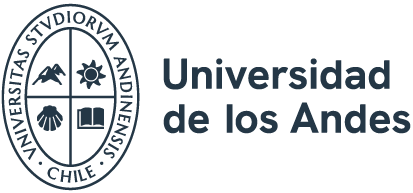
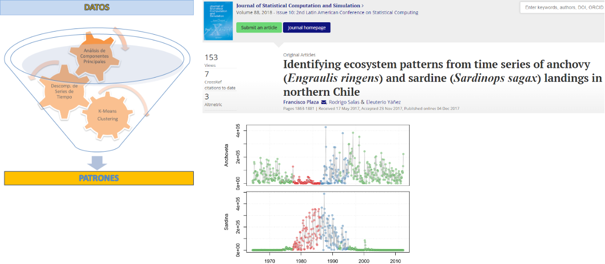
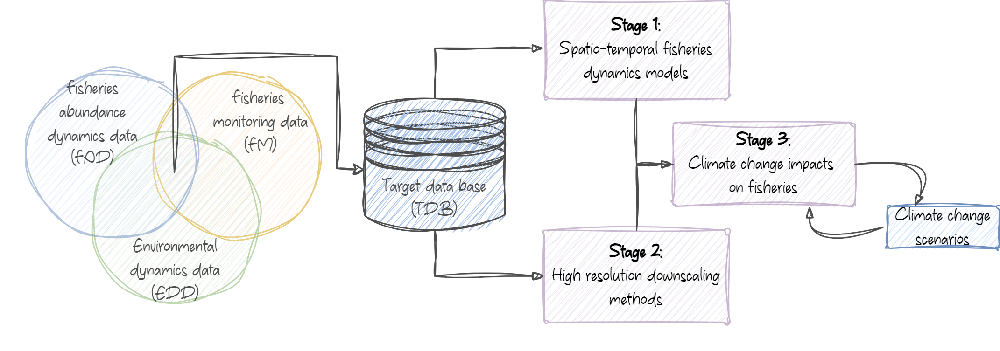

Concurso Académico Jornada Completa 
Estadística y Machine Learning
Facultad de Ingeniería y Ciencias Aplicadas
Universidad de los Andes
4 de noviembre de 2025
Ingeniería Pesquera, PUCV (2008).
Tesis: redes neuronales MLP para predicción de desembarques de anchoveta.
Magíster en Estadística, UV (2017).
Tesis: Herramientas de ciencia de datos para la modelación ecosistémica de pesquerías y variables ambientales.
Doctorado en Estadística, UV (2023).
Tesis: Estimación híbrida (Bayes–Deep Learning) y con missing data en modelos del tipo GARCH-X.
Líneas de investigación
Universidad de Santiago (USACH)
Profesor Asociado Jornada Completa (2023–presente)
Universidad de Valparaíso (UV)
Pregrado: Ingeniería Estadística y Ciencia de Datos, Facultad de Ciencias, Instituto de Estadística (UV): Cursos en estadística no paramétrica, modelos lineales, programación (en R y Python), metodología de la investigación.
Postítulo: Diplomado de Data Science, Facultad de Ingeniería, Escuela de Informática (UV): Módulo de modelos estadísticos: probabilidades, modelos lineales, series de tiempo.
Instituto de Fomento Pesquero (IFOP)
Ingeniero Control de Gestión Unidad de Auditoría y Control — Dirección Ejecutiva (2013–2023)
Ciencia de datos

Fondecyt de Iniciación en Investigación N°11251120 (2025–2027)
Climate change: spatio-temporal ecosystem-based dynamics using statistical tools, generative AI and long memory time series.

Procesos Gaussianos y no gaussianos
Desastres naturales
Enfoque de enseñanza
R, Python, Git, Quarto, técnicas reproducibles.Cursos impartidos recientemente
| Simulación Estadística | Estadística no paramétrica | |
| Modelos de Deep Learning | Metodología de investigación | |
| Modelos de Deep Learning | Computación I-II (R y Python) |
Supervisión
Actividades destacadas
Quarto, GitHub, Github-pages).Línea central
Machine Learning + Series de Tiempo + Medio Ambiente/Sistemas Naturales/Desastres Naturales
Líneas de trabajo específico
Objetivo 2025–2030